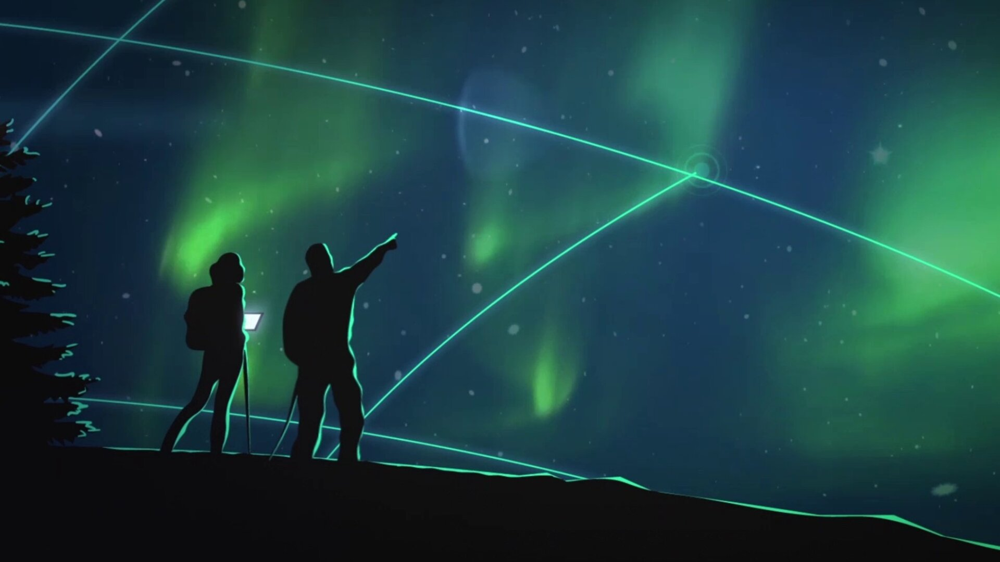
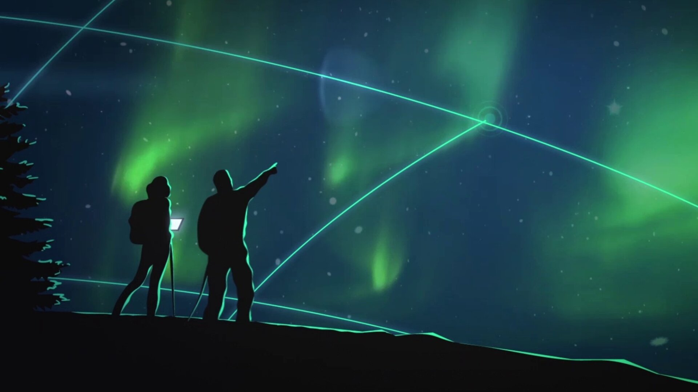

ESA Space Solutions
ESA Space Solutions is the go-to place for great business ideas involving space in all areas of society and the economy.
Its mission is to support entrepreneurs in Europe in the development of businesses using satellite applications and space technology.
Are you an entrepreneur, are you running a start-up or an established business? ESA Space Solutions can help you with funding support, business incubation, access to investors and business expertise. The programme is designed to provide multiple entry points: the ESA Business Applications Programme; the ESA Business Incubation Centres; and Technology Transfer.
ESA Business Applications
The ESA Business Applications programme supports the development of sustainable services that use space assets.
The programme offers expert support to entrepreneurs and three funding opportunities.
Kick start
Kick-Start is a funding scheme with thematic activities and is open to any industry. If you are running a start-up, or a small or medium-sized enterprise, and are seeking opportunities to develop your ideas for new commercial applications, the Kick-Start funding calls are designed for you.
Activities are funded up to 80% of the total cost and ESA provides up to €64 000 in co-funding.
Feasibility studies
A feasibility study provides you with an opportunity to explore your ideas, create a business plan and connect with potential customers. ESA’s experts support you in your quest to integrate any space asset into your business and provide the framework for your study. This may evolve into a demonstration project, the final aim being the implementation of a commercially viable and sustainable service.
Activities are funded up to 50% of the total cost.
Demonstration projects
Demonstration projects are designed to mature the value proposition and business plan, and demonstrate the service with potential customers in real life. Demonstration projects are user-driven and they benefit from using at least one space asset, with clear potential to become commercially viable.
Activities are funded up to 50% of the total cost.
ESA Business Incubation Centres
These aim to support promising start-ups in their journey to become commercially viable companies based on a space technology or space data. ESA’s Business Incubation Centres (BICs) provide support to the start-up company to develop the business until the company is ready to leave the incubation phase. After that, the start up will become part of the alumni network to gain further access to contacts throughout relevant industries.
ESA BICs are the largest network of space incubators in Europe. The main objective of ESA BICs is to support entrepreneurs with a space-based business idea, thereby creating and growing clusters of space-related start-up companies across Europe.
The network is managed by local champions who connect their ESA BICs to their local industries, universities, research organisations, government and investor communities, while also maintaining strong regional and national links. This makes the ESA BICs very well embedded in the local communities as the place of choice for all space-related innovation and business.
Tapping into this excellence provides rich opportunities to get your product or service market ready and off the ground, and for finding new business partners.
Technology transfer
Knowing exactly how space can benefit your business may not always be obvious. Technology brokers are experts in assessing market needs in areas where there is a high potential for exploiting space technology. They provide comprehensive advice, research, market studies, product development services and more to support you - before, during and after transfer. Your business innovation needs are supported by ESA’s technology broker network.
ESA technology brokers work to facilitate the commercialisation of space technologies, know-how and competences into viable business opportunities for other industries. The broker network works to identify innovation challenges from a diverse range of industries and solves them using technology developed by the European space industry.
For more information, please email business@esa.int.